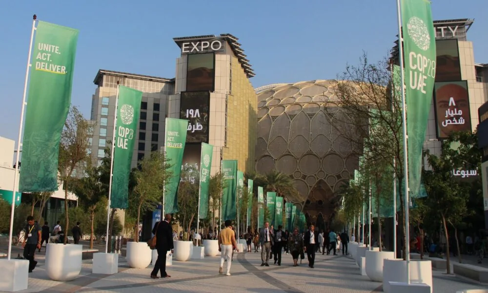
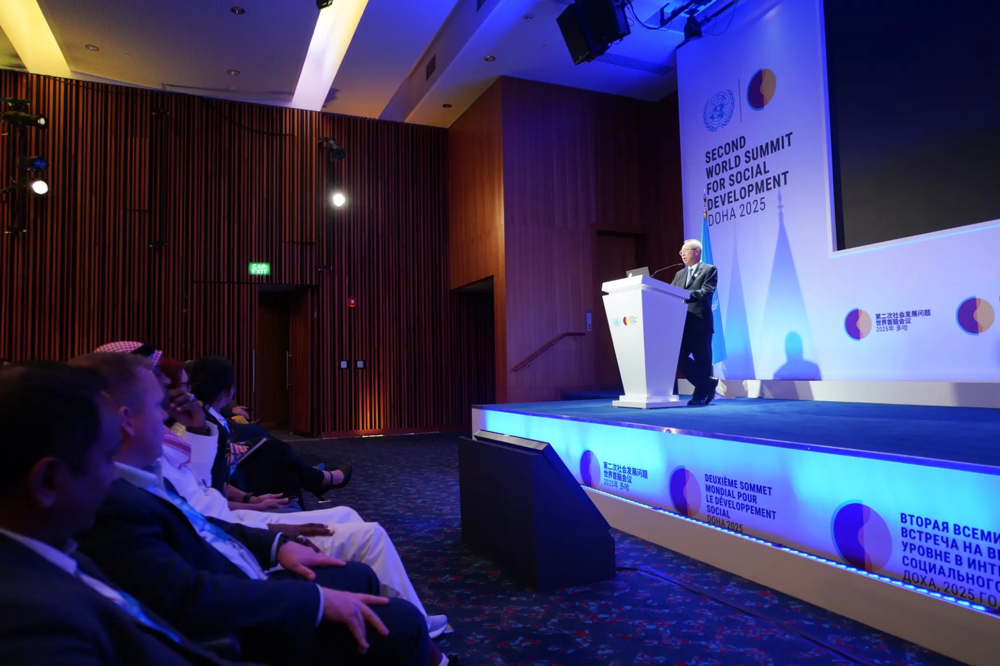
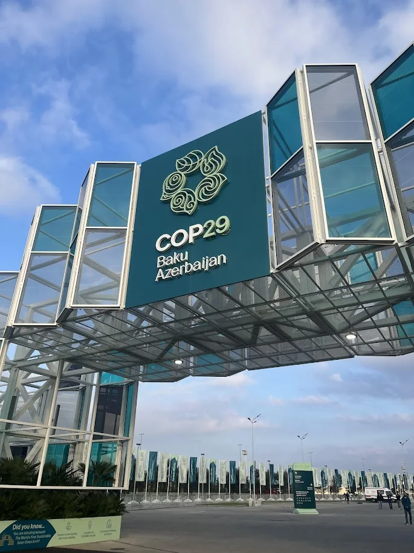
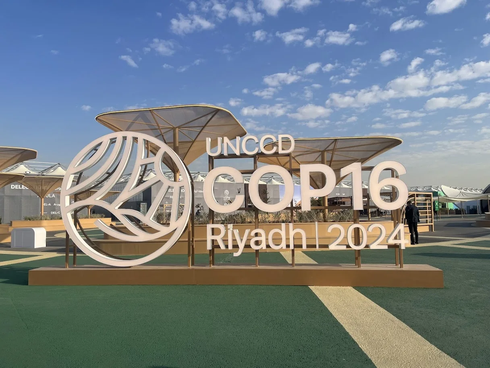
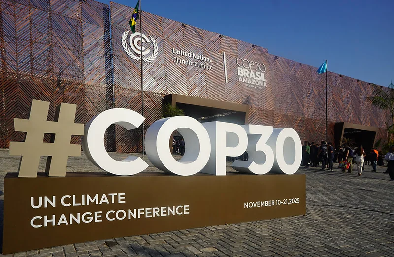
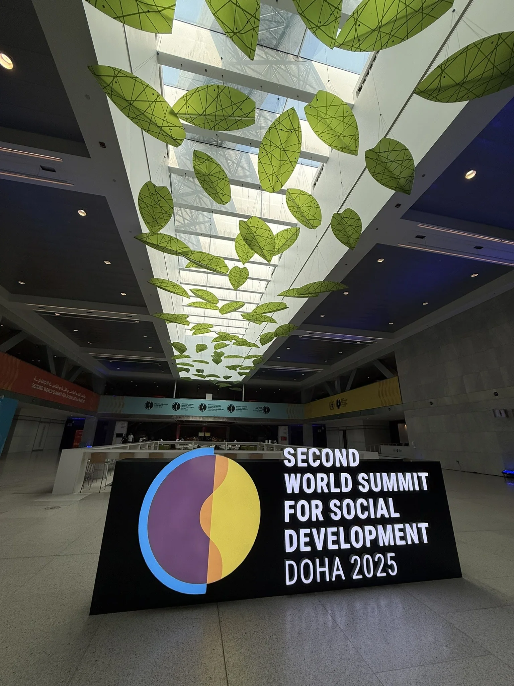
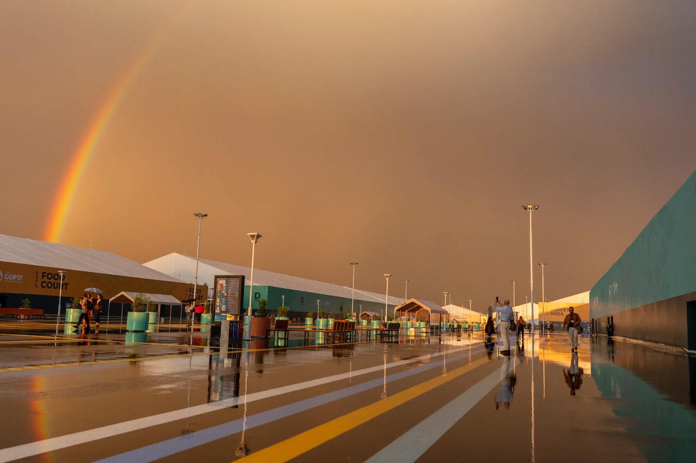
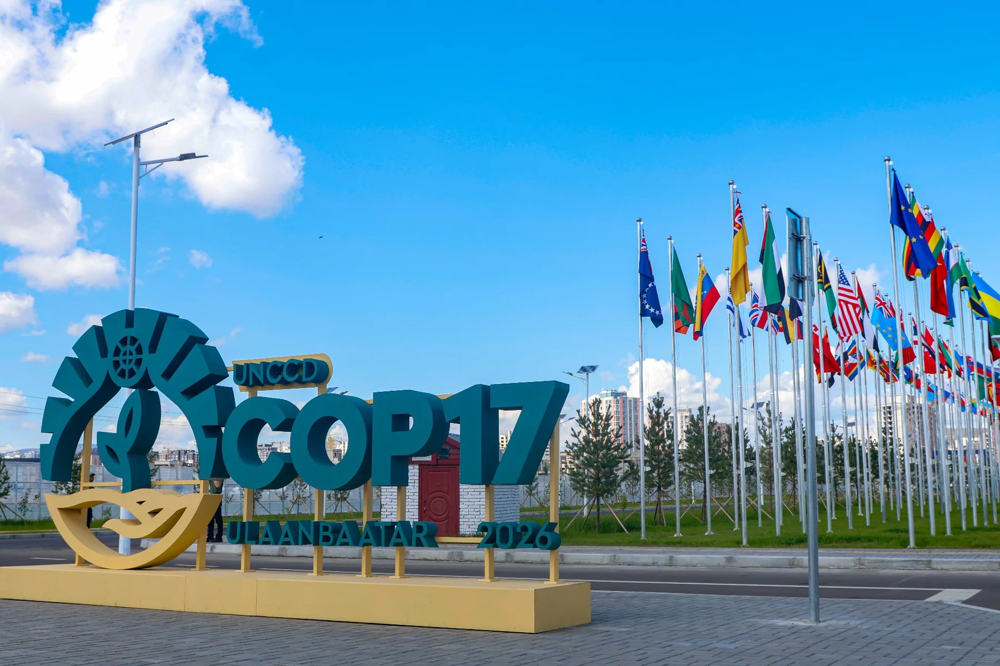

Dubai · 2023
UNFCCC COP28
Climate negotiations, civil society meetings and the network of side events that surrounds the formal process.

Six conference engagements across climate, land and social development processes. Three confirmed accreditation standings. One purpose: bring stronger relationships and better questions back to practical work.
International meetings create access to policy discussions, technical expertise and potential partners. Their value comes from listening carefully, asking better questions and bringing useful relationships back into practical work.

Climate negotiations, civil society meetings and the network of side events that surrounds the formal process.

A climate conference centred heavily on finance, implementation and the gap between commitments and delivery.

Land restoration, drought resilience and the role of governments, civil society and business in implementation.

A climate conference in the Amazon region, with forests, nature and implementation placed close to the centre of discussion.

A United Nations social development summit focused on the relationship between social progress, inclusion and development.

The next stage of the global land and drought process, hosted in Mongolia, with a strong drylands context.
Accreditation applies only to the three entries shown here. The six cards above document conference engagement and do not imply accreditation to every conference or convention.
CuteFela has observer accreditation within the United Nations Convention to Combat Desertification process.
Official UNCCD sourceSpecial accreditation was granted for the 2026 United Nations Water Conference.
Official UN DESA sourceSpecial accreditation was granted for the Second World Summit for Social Development, Doha 2025.
Official UN sourceFor CuteFela, international engagement should help identify relevant expertise, understand policy and finance conversations, improve the questions asked at home and create potential routes for collaboration.
The purpose is to turn access into stronger questions, useful relationships and new opportunities for practical collaboration.
